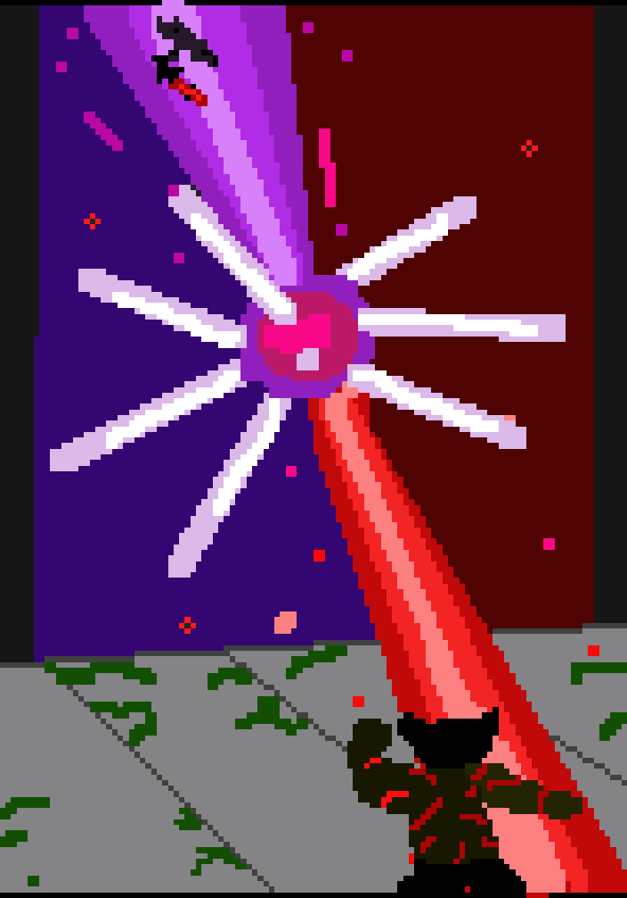

深渊之底 / ABYSS OF THE DEEP
一款单文件 HTML5 像素地牢动作 RPG。3 章共 18 段，每段一张独立大图：一条主廊、四间大厅、两间岔路小屋，过段必须解开符文门。
主角沿用像素图集里的原始小人，另有 16 件可收集服饰（头 / 身 / 披三槽，各自带攻防加成）。打破木桶与宝箱，掉落物会落在脚边，走过去才算捡到。
下载游戏拿到的就是单文件 HTML：存到本地后双击、用浏览器打开即可游玩，不联网也能跑，存档存在浏览器本地。
分两个版本：WINDOWS 是横屏版（640×360，WASD / 方向键移动，1 – 6 放技能，技能自动锁敌，没有触屏按键）；ANDROID 是竖屏触屏版（左下方向盘 + 右下技能键）。两版同一个游戏本体，存档互不相通。
怪物素材、墙地素材、封面均由作者手绘；特效全部为像素硬边，不使用半透明雾化。
iOS 不允许从网页直接装应用包（.ipa 只能在 App Store 或 TestFlight 分发），所以这里用苹果官方的「添加到主屏幕」——效果一样是一个独立图标、全屏运行、离线也能开。
1 用 Safari 打开本页（微信 / 其他浏览器里不行）
2 点底部中间的「分享」按钮
3 往下找到「添加到主屏幕」，命名后确认
4 回主屏点新图标即可开始
想先在电脑上试一试：点 WINDOWS 那一格，下载下来的是一个单文件 HTML，双击就能玩。